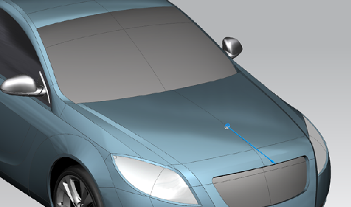

Use the Set Rotation Reference command to select an alternative rotation point or rotation axis. This command replaces Set Rotate Point in the View shortcut menu.
To set the axis of rotation, you can select an object such as:
An edge or curve. The object can be either linear or non-linear.
A datum axis.
Use the Clear Rotation Reference command to clear your previously selected rotation reference.
You can rotate the display about a specific point or axis to view part features, assembly features, and surfaces in the design.
|
Example |
In automotive design, you can use a vector as a rotation axis to evaluate surfaces along the primary visual lines for a car’s exterior body panel design.  |
|
Shortcut menu |
Right-click in the background of the graphics window→Set Rotation Reference or Clear Rotation Reference |